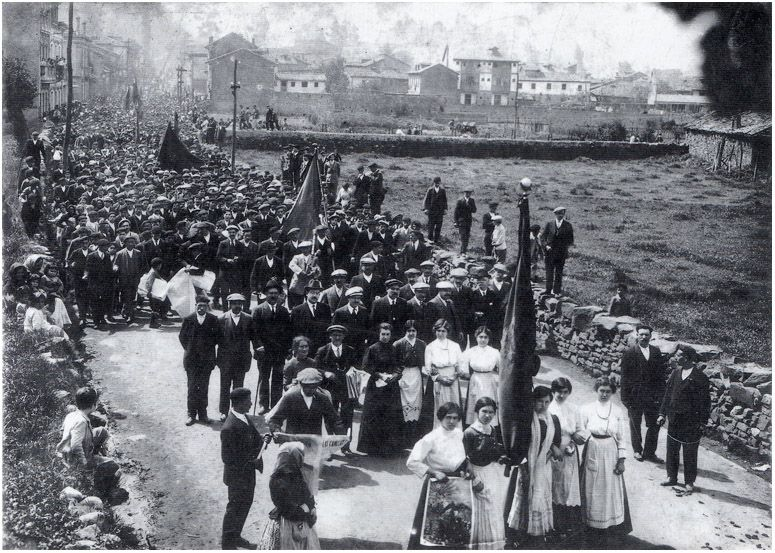

Las excepciones · Elecciones: 2004-2023
Las cuencas mineras de Asturias votan a la derecha hasta 16 puntos menos de lo que predice su perfil, y a la izquierda como hace veinte años
En San Martín del Rey Aurelio, Mieres, Langreo y Laviana, PP, Vox y Cs sacaron el 23J entre el 31,7 % y el 36,8 %, entre 11,2 y 16,2 puntos menos de lo que predicen su renta, su edad, su paro y su tamaño. La izquierda estatal sigue donde estaba en 2004: entre el 56,5 % y el 65,2 % del voto, frente al 49,3 % del conjunto de Asturias.
Dato: verificable y reproducible
La pregunta: ¿Qué queda del voto de las cuencas mineras asturianas, y cuánto se aparta de lo que su perfil haría esperar?
Valles que no se movieron
DatoEn los valles del Nalón y del Caudal, la izquierda estatal (el PSOE más el espacio de IU, Podemos y Sumar) sacó en 2004 entre el 54,5 % y el 64,8 % del voto. Veinte años, ocho elecciones generales y dos partidos nuevos después, en 2023 sacó entre el 56,5 % y el 65,2 %.
DatoEn el mismo periodo, el conjunto de Asturias pasó de dar a la derecha el 43,9 % al 48,1 %. El 23J el PP ganó en la comunidad con el 35,6 %, frente al 34,4 % del PSOE. En las cuencas, el PSOE fue primero en los cinco municipios.
Lo que dice el modelo
DatoEl modelo de esta serie estima el voto a PP, Vox y Cs de cada municipio a partir de su renta, edad, paro, estudios, población extranjera, tamaño y provincia. Para San Martín del Rey Aurelio predice el 47,9 %; el 23J fue el 31,7 %. Es la 5.ª mayor diferencia a la baja de los municipios españoles de más de 10.000 habitantes. Mieres es la 6.ª (−14,8 puntos).
DatoLangreo (−12,1), Laviana (−11,2), Lena (−10,3) y Aller (−7,6) completan la lista: los seis municipios asturianos que más se apartan del modelo a la baja son de las cuencas.
DatoLas ciudades de la costa votan casi lo que predice su perfil: Gijón (−1,5) y Avilés (−2,2). Oviedo se aparta en sentido contrario (+6,2).
El voto local: IU, por delante del PSOE
DatoEn las municipales de mayo de 2023, la lista más votada en Mieres fue «Convocatoria por Mieres IU-Más País-IAS», con el 55,9 %. En Langreo ganó «Convocatoria por Langréu IU-Más País-IAS», con el 30,3 %. En Aller, el PSOE sacó el 64,4 %.
PatrónEn las cuencas, el espacio a la izquierda del PSOE es más fuerte que en el resto de España. En 2015, Podemos e IU sumaron el 41,8 % en Mieres y el 40,7 % en Langreo.
DatoSon también municipios con mucho paro (entre el 17,8 % y el 25,7 % en 2021). El modelo ya tiene en cuenta ese dato y el resto del perfil; la diferencia es lo que queda después.
Sobre el terreno
DatoEn la primavera de 1962 empezó en el pozo Nicolasa de Mieres la «huelgona», un paro de picadores que se extendió a las cuencas mineras asturianas y a otras zonas de España. Fuentes: 1, 2
Lo que no sabemos
- HipótesisPor qué. La historia minera y sindical de los valles es la hipótesis obvia, pero esta pieza todavía no la ha contrastado con dos fuentes independientes, así que la deja como hipótesis.
Los datos
| Municipio | Real | Previsto | Diferencia |
|---|---|---|---|
| San Martín del Rey Aurelio | 31,7 | 47,9 | −16,2 |
| Mieres | 32,8 | 47,6 | −14,8 |
| Langreo | 34,9 | 47,0 | −12,1 |
| Laviana | 36,8 | 48,0 | −11,2 |
| Lena | 38,2 | 48,5 | −10,3 |
| Aller | 41,3 | 48,9 | −7,6 |
| Corvera de Asturias | 40,7 | 47,2 | −6,6 |
| Carreño | 41,5 | 47,9 | −6,3 |
| Avilés | 45,3 | 47,5 | −2,2 |
| Gijón | 46,7 | 48,2 | −1,5 |
| Siero | 49,5 | 48,8 | +0,7 |
| Gozón | 48,7 | 47,5 | +1,2 |
| Grado | 49,3 | 47,3 | +2,0 |
| Llanera | 52,3 | 49,2 | +3,1 |
| Castrillón | 52,5 | 48,9 | +3,6 |
| Valdés | 52,0 | 45,8 | +6,2 |
| Oviedo | 55,1 | 48,9 | +6,2 |
| Llanes | 53,0 | 46,1 | +6,9 |
| Cangas del Narcea | 58,3 | 48,8 | +9,5 |
| Villaviciosa | 56,6 | 46,6 | +10,0 |
Método y fuentes
- Qué se compara
- Cinco municipios de las cuencas del Nalón y del Caudal frente al resto de Asturias y frente a lo que predice el modelo municipal de esta serie.
- Límites
- El modelo no es una explicación: la diferencia indica dónde mirar, no por qué. «Izquierda» suma el PSOE y el espacio de IU, Podemos y Sumar; «derecha», PP, Vox y Cs (Foro Asturias, aliado del PP, queda en otros).
- Metodología completa
- Cómo se calculan los porcentajes, el modelo, los gemelos y los escaños
- Fuentes
- Ministerio del Interior, resultados electorales por mesa (Infoelectoral). Congreso 2004-2023 vía pollspaindata, commit ee5ecda; municipales 2007-2023 de los ficheros de Infoelectoral
- INE, Atlas de Distribución de Renta de los Hogares 2023 (renta, edad, población), vía ineAtlas.data
- INE, Censo de Población y Viviendas 2021 (estudios, paro, extranjeros)
- Autoría
- Nacho
- Revisión de datos y texto
- Nacho, 2026-10-07
- Publicado · actualizado
- 2026-10-06 · 2026-10-07
- Correcciones
- Ninguna. Historial del Atlas